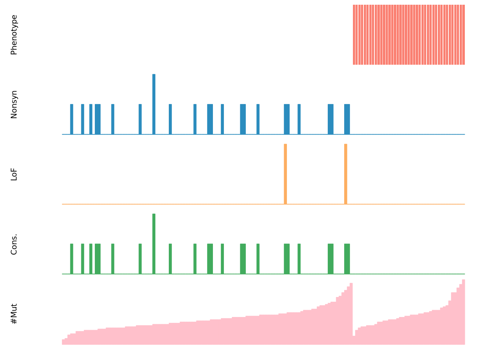

Last updated: 2025-04-09
Checks: 7 0
Knit directory: diffdriver/
This reproducible R Markdown analysis was created with workflowr (version 1.7.1). The Checks tab describes the reproducibility checks that were applied when the results were created. The Past versions tab lists the development history.
Great! Since the R Markdown file has been committed to the Git repository, you know the exact version of the code that produced these results.
Great job! The global environment was empty. Objects defined in the global environment can affect the analysis in your R Markdown file in unknown ways. For reproduciblity it’s best to always run the code in an empty environment.
The command set.seed(20250319) was run prior to running
the code in the R Markdown file. Setting a seed ensures that any results
that rely on randomness, e.g. subsampling or permutations, are
reproducible.
Great job! Recording the operating system, R version, and package versions is critical for reproducibility.
Nice! There were no cached chunks for this analysis, so you can be confident that you successfully produced the results during this run.
Great job! Using relative paths to the files within your workflowr project makes it easier to run your code on other machines.
Great! You are using Git for version control. Tracking code development and connecting the code version to the results is critical for reproducibility.
The results in this page were generated with repository version c3998af. See the Past versions tab to see a history of the changes made to the R Markdown and HTML files.
Note that you need to be careful to ensure that all relevant files for
the analysis have been committed to Git prior to generating the results
(you can use wflow_publish or
wflow_git_commit). workflowr only checks the R Markdown
file, but you know if there are other scripts or data files that it
depends on. Below is the status of the Git repository when the results
were generated:
Ignored files:
Ignored: .Rproj.user/
Untracked files:
Untracked: code/run_workflowr.R
Unstaged changes:
Deleted: analysis/example.Rmd
Modified: diffdriver.Rproj
Note that any generated files, e.g. HTML, png, CSS, etc., are not included in this status report because it is ok for generated content to have uncommitted changes.
These are the previous versions of the repository in which changes were
made to the R Markdown (analysis/diversity.Rmd) and HTML
(docs/diversity.html) files. If you’ve configured a remote
Git repository (see ?wflow_git_remote), click on the
hyperlinks in the table below to view the files as they were in that
past version.
| File | Version | Author | Date | Message |
|---|---|---|---|---|
| Rmd | c3998af | Qirui Zhang | 2025-04-09 | Update analysis results |
knitr::opts_chunk$set(echo = TRUE)In total, 420 analyses were conducted across 20 tumor types, each classified into 21 distinct immune phenotypes (Abundance_IGH, Abundance_IGL, Abundance_TRB, Abundance_TRG, Clonality_IGK, Clonality_TRA, Clonality_TRD, Entropy_IGH, Entropy_IGL, Entropy_TRB, Entropy_TRG, Abundance_IGK, Abundance_TRA, Abundance_TRD, Clonality_IGH, Clonality_IGL, Clonality_TRB, Clonality_TRG, Entropy_IGK, Entropy_TRA, Entropy_TRD). Of these, 140 analyses completed successfully, while 280 encountered errors. The specific tumor type and phenotype combinations corresponding to unsuccessful analyses are detailed below.
The table below summarizes analyses that failed, along with explanations for their failure:
Warning: package 'knitr' was built under R version 4.4.3| Phenotype and Tumor Type | Reason for Failure |
|---|---|
| Entropy_TRG_ESCA_mutations | |
| Entropy_TRG_PRAD_mutations | |
| Entropy_TRG_KIRC_mutations | |
| Entropy_TRG_KIRP_mutations | |
| Entropy_TRG_LUAD_mutations | |
| Entropy_TRG_BRCA_mutations | |
| Entropy_TRG_KICH_mutations | |
| Entropy_TRG_LIHC_mutations | |
| Entropy_TRG_SKCM_mutations | |
| Entropy_TRG_LUSC_mutations | |
| Entropy_TRG_CHOL_mutations | |
| Entropy_TRG_UCEC_mutations | |
| Entropy_TRG_HNSC_mutations | |
| Entropy_TRG_BLCA_mutations | |
| Clonality_IGL_PRAD_mutations | |
| Clonality_IGL_CHOL_mutations | |
| Clonality_IGL_BLCA_mutations | |
| Clonality_IGL_KIRC_mutations | |
| Clonality_IGL_HNSC_mutations | |
| Clonality_IGL_SKCM_mutations | |
| Clonality_IGL_UCEC_mutations | |
| Clonality_IGL_KIRP_mutations | |
| Clonality_IGL_LIHC_mutations | |
| Clonality_IGL_BRCA_mutations | |
| Clonality_IGL_LUSC_mutations | |
| Clonality_IGL_KICH_mutations | |
| Clonality_IGL_ESCA_mutations | |
| Clonality_IGL_LUAD_mutations | |
| Entropy_TRD_UCS_mutations | |
| Entropy_TRD_ESCA_mutations | |
| Entropy_TRD_BRCA_mutations | |
| Entropy_TRD_CHOL_mutations | |
| Entropy_TRD_LIHC_mutations | |
| Entropy_TRD_LUSC_mutations | |
| Entropy_TRD_LUAD_mutations | |
| Abundance_IGH_LIHC_mutations | |
| Abundance_IGH_LUSC_mutations | |
| Abundance_IGH_ESCA_mutations | |
| Abundance_IGH_BRCA_mutations | |
| Abundance_IGH_BLCA_mutations | |
| Abundance_IGH_KICH_mutations | |
| Abundance_IGH_UCEC_mutations | |
| Abundance_IGH_KIRC_mutations | |
| Abundance_IGH_PRAD_mutations | |
| Abundance_IGH_CHOL_mutations | |
| Abundance_IGH_LUAD_mutations | |
| Abundance_IGH_SKCM_mutations | |
| Abundance_IGH_HNSC_mutations | |
| Abundance_IGH_KIRP_mutations | |
| Abundance_TRD_HNSC_mutations | |
| Abundance_TRD_LUSC_mutations | |
| Abundance_TRD_LUAD_mutations | |
| Abundance_TRD_BRCA_mutations | |
| Abundance_TRD_BLCA_mutations | |
| Abundance_TRD_PRAD_mutations | |
| Abundance_TRD_KIRC_mutations | |
| Abundance_TRD_SKCM_mutations | |
| Abundance_TRD_LIHC_mutations | |
| Abundance_TRD_CHOL_mutations | |
| Abundance_TRD_UCEC_mutations | |
| Abundance_TRD_KICH_mutations | |
| Abundance_TRD_KIRP_mutations | |
| Abundance_TRD_ESCA_mutations | |
| Clonality_IGK_KIRC_mutations | |
| Clonality_IGK_UCEC_mutations | |
| Clonality_IGK_LUSC_mutations | |
| Clonality_IGK_HNSC_mutations | |
| Clonality_IGK_LIHC_mutations | |
| Clonality_IGK_CHOL_mutations | |
| Clonality_IGK_BRCA_mutations | |
| Clonality_IGK_ESCA_mutations | |
| Clonality_IGK_LUAD_mutations | |
| Clonality_IGK_KICH_mutations | |
| Clonality_IGK_PRAD_mutations | |
| Clonality_IGK_KIRP_mutations | |
| Clonality_IGK_SKCM_mutations | |
| Clonality_IGK_BLCA_mutations | |
| Abundance_TRA_KICH_mutations | |
| Abundance_TRA_CHOL_mutations | |
| Abundance_TRA_LUSC_mutations | |
| Abundance_TRA_HNSC_mutations | |
| Abundance_TRA_KIRC_mutations | |
| Abundance_TRA_LUAD_mutations | |
| Abundance_TRA_BRCA_mutations | |
| Abundance_TRA_BLCA_mutations | |
| Abundance_TRA_LIHC_mutations | |
| Abundance_TRA_SKCM_mutations | |
| Abundance_TRA_KIRP_mutations | |
| Abundance_TRA_ESCA_mutations | |
| Abundance_TRA_PRAD_mutations | |
| Abundance_TRA_UCEC_mutations | |
| Entropy_IGH_ESCA_mutations | |
| Entropy_IGH_KICH_mutations | |
| Entropy_IGH_LUAD_mutations | |
| Entropy_IGH_BRCA_mutations | |
| Entropy_IGH_LIHC_mutations | |
| Entropy_IGH_BLCA_mutations | |
| Entropy_IGH_HNSC_mutations | |
| Entropy_IGH_LUSC_mutations | |
| Entropy_IGH_KIRP_mutations | |
| Entropy_IGH_CHOL_mutations | |
| Entropy_IGH_KIRC_mutations | |
| Entropy_IGH_SKCM_mutations | |
| Entropy_IGH_UCEC_mutations | |
| Entropy_IGH_PRAD_mutations | |
| Abundance_IGK_LUSC_mutations | |
| Abundance_IGK_KIRP_mutations | |
| Abundance_IGK_LIHC_mutations | |
| Abundance_IGK_UCEC_mutations | |
| Abundance_IGK_LUAD_mutations | |
| Abundance_IGK_CHOL_mutations | |
| Abundance_IGK_BLCA_mutations | |
| Abundance_IGK_KICH_mutations | |
| Abundance_IGK_HNSC_mutations | |
| Abundance_IGK_KIRC_mutations | |
| Abundance_IGK_BRCA_mutations | |
| Abundance_IGK_ESCA_mutations | |
| Abundance_IGK_SKCM_mutations | |
| Abundance_IGK_PRAD_mutations | |
| Abundance_IGL_KIRC_mutations | |
| Abundance_IGL_LIHC_mutations | |
| Abundance_IGL_LUAD_mutations | |
| Abundance_IGL_KICH_mutations | |
| Abundance_IGL_ESCA_mutations | |
| Abundance_IGL_BRCA_mutations | |
| Abundance_IGL_KIRP_mutations | |
| Abundance_IGL_HNSC_mutations | |
| Abundance_IGL_SKCM_mutations | |
| Abundance_IGL_LUSC_mutations | |
| Abundance_IGL_BLCA_mutations | |
| Abundance_IGL_CHOL_mutations | |
| Abundance_IGL_UCEC_mutations | |
| Abundance_IGL_PRAD_mutations | |
| Entropy_TRB_BRCA_mutations | |
| Entropy_TRB_CHOL_mutations | |
| Entropy_TRB_KICH_mutations | |
| Entropy_TRB_KIRC_mutations | |
| Entropy_TRB_KIRP_mutations | |
| Entropy_TRB_LUAD_mutations | |
| Entropy_TRB_UCEC_mutations | |
| Entropy_TRB_SKCM_mutations | |
| Entropy_TRB_LUSC_mutations | |
| Entropy_TRB_BLCA_mutations | |
| Entropy_TRB_PRAD_mutations | |
| Entropy_TRB_HNSC_mutations | |
| Entropy_TRB_LIHC_mutations | |
| Entropy_TRB_ESCA_mutations | |
| Clonality_TRB_CHOL_mutations | |
| Clonality_TRB_PRAD_mutations | |
| Clonality_TRB_LUSC_mutations | |
| Clonality_TRB_ESCA_mutations | |
| Clonality_TRB_KIRC_mutations | |
| Clonality_TRB_BRCA_mutations | |
| Clonality_TRB_UCEC_mutations | |
| Clonality_TRB_KICH_mutations | |
| Clonality_TRB_LIHC_mutations | |
| Clonality_TRB_SKCM_mutations | |
| Clonality_TRB_LUAD_mutations | |
| Clonality_TRB_KIRP_mutations | |
| Clonality_TRB_BLCA_mutations | |
| Clonality_TRB_HNSC_mutations | |
| Clonality_IGH_UCEC_mutations | |
| Clonality_IGH_LUSC_mutations | |
| Clonality_IGH_LUAD_mutations | |
| Clonality_IGH_KIRP_mutations | |
| Clonality_IGH_CHOL_mutations | |
| Clonality_IGH_KICH_mutations | |
| Clonality_IGH_LIHC_mutations | |
| Clonality_IGH_ESCA_mutations | |
| Clonality_IGH_BLCA_mutations | |
| Clonality_IGH_SKCM_mutations | |
| Clonality_IGH_PRAD_mutations | |
| Clonality_IGH_KIRC_mutations | |
| Clonality_IGH_HNSC_mutations | |
| Clonality_IGH_BRCA_mutations | |
| Entropy_IGK_KIRC_mutations | |
| Entropy_IGK_SKCM_mutations | |
| Entropy_IGK_HNSC_mutations | |
| Entropy_IGK_ESCA_mutations | |
| Entropy_IGK_BRCA_mutations | |
| Entropy_IGK_KICH_mutations | |
| Entropy_IGK_KIRP_mutations | |
| Entropy_IGK_UCEC_mutations | |
| Entropy_IGK_PRAD_mutations | |
| Entropy_IGK_BLCA_mutations | |
| Entropy_IGK_LUAD_mutations | |
| Entropy_IGK_LUSC_mutations | |
| Entropy_IGK_CHOL_mutations | |
| Entropy_IGK_LIHC_mutations | |
| Abundance_TRG_KIRP_mutations | |
| Abundance_TRG_KICH_mutations | |
| Abundance_TRG_HNSC_mutations | |
| Abundance_TRG_CHOL_mutations | |
| Abundance_TRG_ESCA_mutations | |
| Abundance_TRG_SKCM_mutations | |
| Abundance_TRG_BRCA_mutations | |
| Abundance_TRG_BLCA_mutations | |
| Abundance_TRG_PRAD_mutations | |
| Abundance_TRG_LIHC_mutations | |
| Abundance_TRG_LUSC_mutations | |
| Abundance_TRG_UCEC_mutations | |
| Abundance_TRG_LUAD_mutations | |
| Abundance_TRG_KIRC_mutations | |
| Clonality_TRD_UCS_mutations | |
| Clonality_TRD_LUAD_mutations | |
| Clonality_TRD_LUSC_mutations | |
| Clonality_TRD_ESCA_mutations | |
| Clonality_TRD_CHOL_mutations | |
| Clonality_TRD_LIHC_mutations | |
| Clonality_TRD_BRCA_mutations | |
| Clonality_TRA_BRCA_mutations | |
| Clonality_TRA_CHOL_mutations | |
| Clonality_TRA_KIRC_mutations | |
| Clonality_TRA_HNSC_mutations | |
| Clonality_TRA_KIRP_mutations | |
| Clonality_TRA_BLCA_mutations | |
| Clonality_TRA_SKCM_mutations | |
| Clonality_TRA_LUSC_mutations | |
| Clonality_TRA_UCEC_mutations | |
| Clonality_TRA_ESCA_mutations | |
| Clonality_TRA_LIHC_mutations | |
| Clonality_TRA_LUAD_mutations | |
| Clonality_TRA_PRAD_mutations | |
| Clonality_TRA_KICH_mutations | |
| Clonality_TRG_PRAD_mutations | |
| Clonality_TRG_HNSC_mutations | |
| Clonality_TRG_UCEC_mutations | |
| Clonality_TRG_CHOL_mutations | |
| Clonality_TRG_BRCA_mutations | |
| Clonality_TRG_KIRP_mutations | |
| Clonality_TRG_KICH_mutations | |
| Clonality_TRG_ESCA_mutations | |
| Clonality_TRG_LUAD_mutations | |
| Clonality_TRG_SKCM_mutations | |
| Clonality_TRG_KIRC_mutations | |
| Clonality_TRG_LIHC_mutations | |
| Clonality_TRG_BLCA_mutations | |
| Clonality_TRG_LUSC_mutations | |
| Entropy_TRA_KIRC_mutations | |
| Entropy_TRA_LUAD_mutations | |
| Entropy_TRA_SKCM_mutations | |
| Entropy_TRA_LIHC_mutations | |
| Entropy_TRA_ESCA_mutations | |
| Entropy_TRA_BRCA_mutations | |
| Entropy_TRA_UCEC_mutations | |
| Entropy_TRA_PRAD_mutations | |
| Entropy_TRA_CHOL_mutations | |
| Entropy_TRA_LUSC_mutations | |
| Entropy_TRA_KIRP_mutations | |
| Entropy_TRA_BLCA_mutations | |
| Entropy_TRA_KICH_mutations | |
| Entropy_TRA_HNSC_mutations | |
| Abundance_TRB_PRAD_mutations | |
| Abundance_TRB_HNSC_mutations | |
| Abundance_TRB_BLCA_mutations | |
| Abundance_TRB_ESCA_mutations | |
| Abundance_TRB_KIRP_mutations | |
| Abundance_TRB_LUSC_mutations | |
| Abundance_TRB_CHOL_mutations | |
| Abundance_TRB_LUAD_mutations | |
| Abundance_TRB_BRCA_mutations | |
| Abundance_TRB_SKCM_mutations | |
| Abundance_TRB_KICH_mutations | |
| Abundance_TRB_UCEC_mutations | |
| Abundance_TRB_KIRC_mutations | |
| Abundance_TRB_LIHC_mutations | |
| Entropy_IGL_CHOL_mutations | |
| Entropy_IGL_SKCM_mutations | |
| Entropy_IGL_LUAD_mutations | |
| Entropy_IGL_KICH_mutations | |
| Entropy_IGL_BLCA_mutations | |
| Entropy_IGL_KIRP_mutations | |
| Entropy_IGL_ESCA_mutations | |
| Entropy_IGL_LUSC_mutations | |
| Entropy_IGL_LIHC_mutations | |
| Entropy_IGL_HNSC_mutations | |
| Entropy_IGL_UCEC_mutations | |
| Entropy_IGL_BRCA_mutations | |
| Entropy_IGL_KIRC_mutations | |
| Entropy_IGL_PRAD_mutations |
This code segment scans through analysis output directories, identifies relevant result files (*_resdd.Rd), extracts corresponding tumor types, immune phenotypes, and analysis modes(sig/reg).
get_files <- function(outputdir, tumors = NULL, phenotypes = NULL) {
files <- list.files(
path = outputdir,
pattern = "_resdd\\.Rd$",
recursive = TRUE,
full.names = TRUE
)
matching_files_txt <- sub("\\.Rd$", ".txt", files)
analysis_mode <- ifelse(grepl("_sig_", basename(files)), "sig", "reg")
inner_folder_names <- basename(dirname(files))
phenotype_folder_names <- basename(dirname(dirname(files)))
tumor_names <- mapply(function(inner_name, phen) {
pattern_front <- paste0("^", phen, "_")
tmp <- sub(pattern_front, "", inner_name)
tmp <- sub("_mutations$", "", tmp)
return(tmp)
}, inner_folder_names, phenotype_folder_names)
phenos_all <- phenotype_folder_names
filedf <- data.frame(
tumor = tumor_names,
phenotype = phenos_all,
mode = analysis_mode,
file = files,
filetxt = matching_files_txt,
stringsAsFactors = FALSE
)
if (!is.null(tumors)) {
filedf <- filedf[filedf$tumor %in% tumors, ]
}
if (!is.null(phenotypes)) {
filedf <- filedf[filedf$phenotype %in% phenotypes, ]
}
rownames(filedf) <- NULL
return(filedf)
}
filedf <- get_files(
outputdir = "/dartfs/rc/lab/S/Szhao/qiruiz/diffdriver/temp/output/diversity"
)
head(filedf) tumor phenotype mode
1 CESC Abundance_IGH reg
2 CESC Abundance_IGH sig
3 GBM Abundance_IGH reg
4 GBM Abundance_IGH sig
5 PAAD Abundance_IGH reg
6 PAAD Abundance_IGH sig
file
1 /dartfs/rc/lab/S/Szhao/qiruiz/diffdriver/temp/output/diversity/Abundance_IGH/Abundance_IGH_CESC_mutations/testdiffdriver_reg_Abundance_IGH_resdd.Rd
2 /dartfs/rc/lab/S/Szhao/qiruiz/diffdriver/temp/output/diversity/Abundance_IGH/Abundance_IGH_CESC_mutations/testdiffdriver_sig_Abundance_IGH_resdd.Rd
3 /dartfs/rc/lab/S/Szhao/qiruiz/diffdriver/temp/output/diversity/Abundance_IGH/Abundance_IGH_GBM_mutations/testdiffdriver_reg_Abundance_IGH_resdd.Rd
4 /dartfs/rc/lab/S/Szhao/qiruiz/diffdriver/temp/output/diversity/Abundance_IGH/Abundance_IGH_GBM_mutations/testdiffdriver_sig_Abundance_IGH_resdd.Rd
5 /dartfs/rc/lab/S/Szhao/qiruiz/diffdriver/temp/output/diversity/Abundance_IGH/Abundance_IGH_PAAD_mutations/testdiffdriver_reg_Abundance_IGH_resdd.Rd
6 /dartfs/rc/lab/S/Szhao/qiruiz/diffdriver/temp/output/diversity/Abundance_IGH/Abundance_IGH_PAAD_mutations/testdiffdriver_sig_Abundance_IGH_resdd.Rd
filetxt
1 /dartfs/rc/lab/S/Szhao/qiruiz/diffdriver/temp/output/diversity/Abundance_IGH/Abundance_IGH_CESC_mutations/testdiffdriver_reg_Abundance_IGH_resdd.txt
2 /dartfs/rc/lab/S/Szhao/qiruiz/diffdriver/temp/output/diversity/Abundance_IGH/Abundance_IGH_CESC_mutations/testdiffdriver_sig_Abundance_IGH_resdd.txt
3 /dartfs/rc/lab/S/Szhao/qiruiz/diffdriver/temp/output/diversity/Abundance_IGH/Abundance_IGH_GBM_mutations/testdiffdriver_reg_Abundance_IGH_resdd.txt
4 /dartfs/rc/lab/S/Szhao/qiruiz/diffdriver/temp/output/diversity/Abundance_IGH/Abundance_IGH_GBM_mutations/testdiffdriver_sig_Abundance_IGH_resdd.txt
5 /dartfs/rc/lab/S/Szhao/qiruiz/diffdriver/temp/output/diversity/Abundance_IGH/Abundance_IGH_PAAD_mutations/testdiffdriver_reg_Abundance_IGH_resdd.txt
6 /dartfs/rc/lab/S/Szhao/qiruiz/diffdriver/temp/output/diversity/Abundance_IGH/Abundance_IGH_PAAD_mutations/testdiffdriver_sig_Abundance_IGH_resdd.txtThe provided function extracts and compiles results from analyses,
filtering specifically for significant differential genes based on a
threshold (dd.fdr < 0.1).
get_diff_table <- function(filedf){
pheno_all <- unique(filedf$phenotype)
numlist <- list()
for (p in pheno_all){
p_txtfiles <- filedf[filedf$phenotype == p, ]
numlist[[p]] <- list()
for (t in seq_len(nrow(p_txtfiles))){
txtf <- p_txtfiles[t, "filetxt"]
rdf <- p_txtfiles[t, "file"]
tumor <- p_txtfiles[t, "tumor"]
mode <- p_txtfiles[t, "mode"] # reg / sig
env <- new.env()
load(rdf, envir = env)
res_rdata <- env$res
res <- read.table(txtf, header = TRUE)
res$gene <- row.names(res)
res$mode <- mode
res$alpha <- sapply(res$gene, function(gene){
res_rdata[[gene]][["dd"]][["res.alt"]]$alpha[2]
})
sig_res <- res[res$dd.fdr < 0.1, ]
if (nrow(sig_res) > 0){
numlist[[p]][[ paste0(tumor, "_", mode) ]] <- sig_res
}
}
if (length(numlist[[p]]) == 0){
numlist[[p]] <- NULL
}
}
combined_df <- do.call(
rbind,
lapply(names(numlist), function(pheno) {
numlist.pheno <- numlist[[pheno]]
df.pheno <- do.call(rbind, lapply(names(numlist.pheno), function(tname) {
df <- numlist.pheno[[tname]]
df$tumor <- sub("_.*", "", tname)
df$mode <- sub(".*_", "", tname)
return(df)
}))
df.pheno$pheno <- pheno
return(df.pheno)
})
)
return(combined_df)
}
diff_table <- get_diff_table(filedf)library(DT)
diff_table_sig <- subset(diff_table, mode == "sig")
datatable(diff_table_sig, options = list(pageLength = 10))diff_table_reg <- subset(diff_table, mode == "reg")
datatable(diff_table_reg, options = list(pageLength = 10))The provided function generates bar plots illustrating the number of significantly differentially expressed genes (dd.fdr < 0.1) for each tumor type across different phenotype contexts.
plot_diff_number <- function(filedf, mode = c("all", "reg", "sig")){
mode <- match.arg(mode)
if (mode != "all"){
filedf <- filedf[filedf$mode == mode, ]
}
pheno_all <- unique(filedf$phenotype)
numlist <- list()
for (p in pheno_all){
p_txtfiles <- filedf[filedf$phenotype == p, ]
numlist[[p]] <- list()
for (t in 1:nrow(p_txtfiles)){
txtf <- p_txtfiles[t, "filetxt"]
tumor <- p_txtfiles[t, "tumor"]
res <- read.table(txtf, header = TRUE)
numlist[[p]][[tumor]] <- c(
nrow(res[res$dd.fdr < 0.1,]),
nrow(res) - nrow(res[res$dd.fdr < 0.1,])
)
}
}
par(mfrow = c(length(numlist),1), mar = c(3,5,2,0))
for (phenotype in names(numlist)) {
colors <- rainbow(length(numlist[[phenotype]]))
plot(
NULL,
xlim = c(0.5, length(numlist[[phenotype]]) + 0.5),
ylim = c(0, max(unlist(sapply(numlist[[phenotype]], `[`, 1)))),
xlab = "Tumor Type",
ylab = "No. Genes",
main = paste("Context:", phenotype),
xaxt = "n", bty = 'n'
)
grid()
axis(
1,
at = 1:length(numlist[[phenotype]]),
labels = names(numlist[[phenotype]]),
las = 2
)
for (i in seq_along(numlist[[phenotype]])) {
bar_height <- numlist[[phenotype]][[i]][1]
rect(i - 0.4, 0, i + 0.4, bar_height, col = colors[i], border = NA)
}
}
}plot_diff_number(filedf, mode = "sig")plot_diff_number(filedf, mode = "reg")To visualize the data for specific genes, diffdriver has a plotting function:
mut_path <- "/dartfs/rc/lab/S/Szhao/qiruiz/diffdriver/tumor_specific_input/TGCT/TGCT_mutations.txt"
mut <- read.table(mut_path, header = TRUE, sep = "\t")
head(mut) Chromosome Position Ref Alt SampleID
1 16 30748991 C T TCGA-SN-A84Y
2 17 8439201 G A TCGA-XE-AAOB
3 14 96858506 G A TCGA-YU-A94I
4 7 100679429 T A TCGA-2G-AAL5
5 7 156802391 G A TCGA-WZ-A7V3
6 3 189586427 G T TCGA-2G-AAG7pheno_path <- "/dartfs/rc/lab/S/Szhao/qiruiz/diffdriver/batch2/tumor_specific_input/TGCT/TGCT_C1.txt"
pheno <- read.table(pheno_path, header = TRUE, sep = "\t")
head(pheno) SampleID C1
1 TCGA-2G-AAFI 0
2 TCGA-2G-AAFM 0
3 TCGA-2G-AAFY 0
4 TCGA-2G-AAG0 0
5 TCGA-2G-AAG9 0
6 TCGA-2G-AAGG 0diffdriver::plot_mut(gene_name = "KIT", mut= mut, pheno = pheno, totalnttype = 96,
anno_dir = "/dartfs/rc/lab/S/Szhao/qiruiz/diffdriver/temp/annodir96")[1] "coding..."
[1] "processing ..."
[1] "for qnvars, filling in missing values ..."
[1] "for cvars (0/1 categories), filling in missing values ..."
[1] "normalizing categorical variables in annotation matrix ..."
[1] "Only keeping the first two columns of the phenotype data frame."
[1] "phenotype name is C1"
[1] "number of samples shared in phenotype and mutation file: 147"
sessionInfo()R version 4.4.2 (2024-10-31)
Platform: x86_64-conda-linux-gnu
Running under: Ubuntu 24.04.1 LTS
Matrix products: default
BLAS/LAPACK: /dartfs-hpc/rc/home/p/f0070pp/.conda/envs/diffdriver/lib/libopenblasp-r0.3.29.so; LAPACK version 3.12.0
locale:
[1] LC_CTYPE=en_US.UTF-8 LC_NUMERIC=C
[3] LC_TIME=en_US.UTF-8 LC_COLLATE=en_US.UTF-8
[5] LC_MONETARY=en_US.UTF-8 LC_MESSAGES=en_US.UTF-8
[7] LC_PAPER=en_US.UTF-8 LC_NAME=C
[9] LC_ADDRESS=C LC_TELEPHONE=C
[11] LC_MEASUREMENT=en_US.UTF-8 LC_IDENTIFICATION=C
time zone: Etc/UTC
tzcode source: system (glibc)
attached base packages:
[1] stats graphics grDevices utils datasets methods base
other attached packages:
[1] DT_0.33 kableExtra_1.4.0 knitr_1.50 workflowr_1.7.1
loaded via a namespace (and not attached):
[1] Matrix_1.7-3 jsonlite_2.0.0 compiler_4.4.2 promises_1.3.2
[5] Rcpp_1.0.14 xml2_1.3.8 stringr_1.5.1 git2r_0.35.0
[9] callr_3.7.6 later_1.4.1 jquerylib_0.1.4 systemfonts_1.2.1
[13] scales_1.3.0 yaml_2.3.10 fastmap_1.2.0 lattice_0.22-6
[17] R6_2.6.1 htmlwidgets_1.6.4 tibble_3.2.1 munsell_0.5.1
[21] rprojroot_2.0.4 svglite_2.1.3 diffdriver_0.1.6 bslib_0.9.0
[25] pillar_1.10.1 rlang_1.1.5 cachem_1.1.0 stringi_1.8.7
[29] httpuv_1.6.15 xfun_0.52 getPass_0.2-4 fs_1.6.5
[33] sass_0.4.9 viridisLite_0.4.2 cli_3.6.4 magrittr_2.0.3
[37] crosstalk_1.2.1 ps_1.8.1 grid_4.4.2 digest_0.6.37
[41] processx_3.8.6 rstudioapi_0.17.1 lifecycle_1.0.4 vctrs_0.6.5
[45] data.table_1.17.0 evaluate_1.0.3 glue_1.8.0 whisker_0.4.1
[49] colorspace_2.1-1 rmarkdown_2.29 httr_1.4.7 tools_4.4.2
[53] pkgconfig_2.0.3 htmltools_0.5.8.1